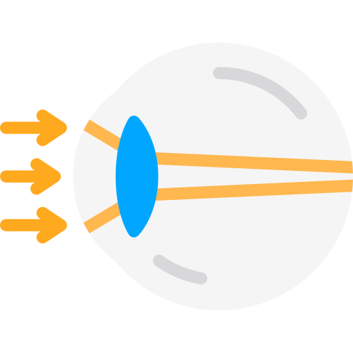
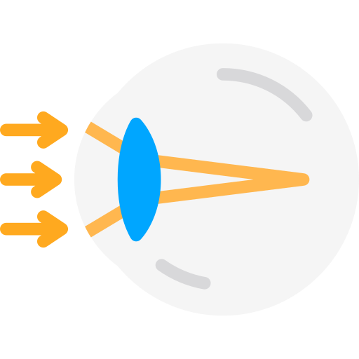
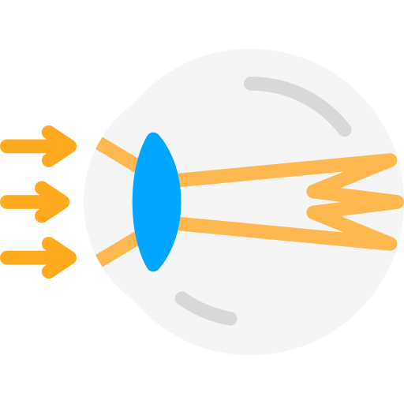

The Lens
Suspended just behind the iris is the lens. The lens is responsible for focusing the light that enters the eye onto the retina. If the light is not perfectly focused vision will not be as clear. This is a refractive error, usually correctable by glasses or contact lenses.
Hyperopia
In a far sighted person (sees better far away and not as well close up) the image focuses behind the retina.
Myopia
In a near sighted person (sees more clearly up close than at a distance) the light is focused before it reaches the retina.
Astigmatism
With astigmatism curves in the cornea or lens cause light to travel at multpile angles causing bluriness and distortion. This affects both near and distance vision.
Cataracts
As we age the natural lens in our eye becomes cloudy, this is called a cataract and can be corrected with surgery. During cataract surgery an artificial lens is inserted in place of the old, cloudy lens. This artificial lens can be calculated to focus light as closely as possible to the retina and correct refractive errors that may have been present with the natural lens.
American Academy of Ophthalmology - Lens